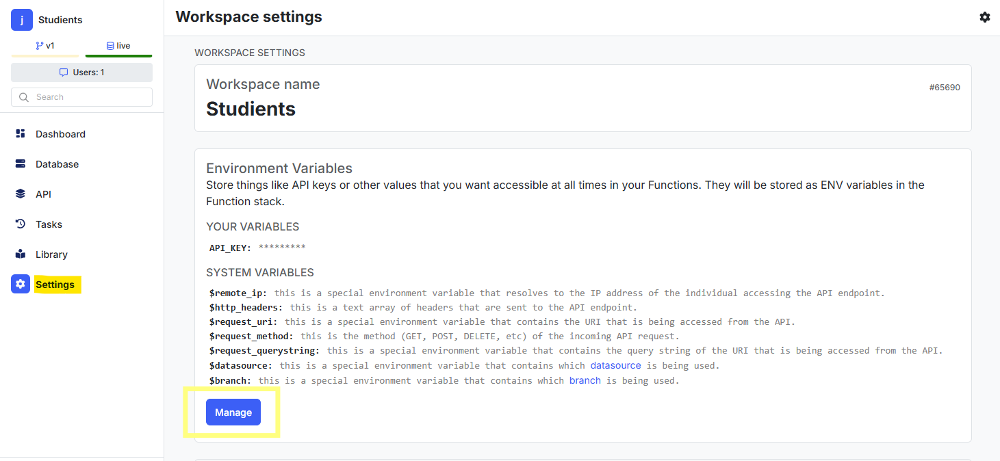
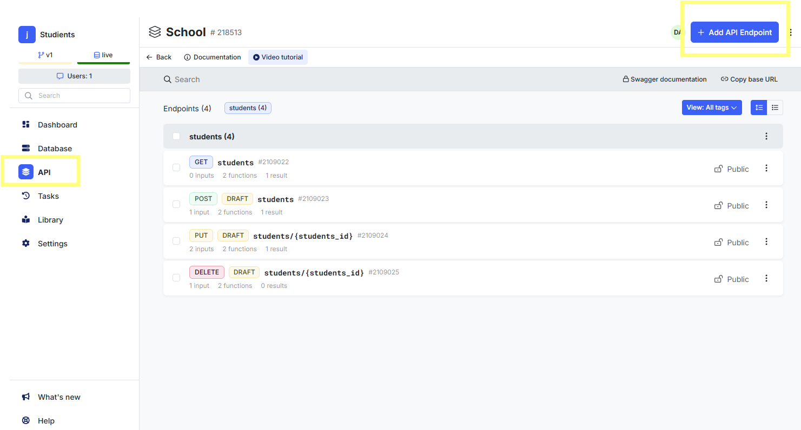
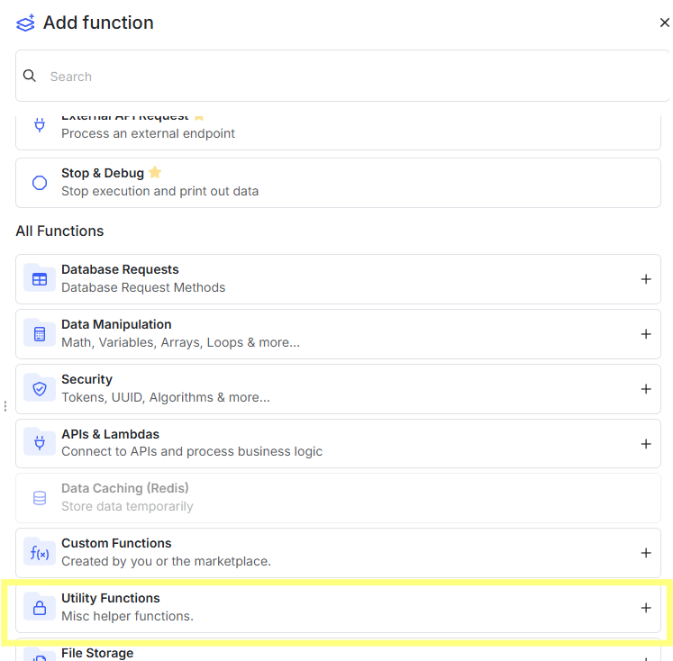
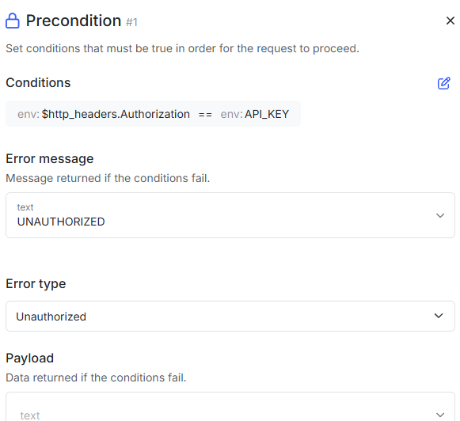
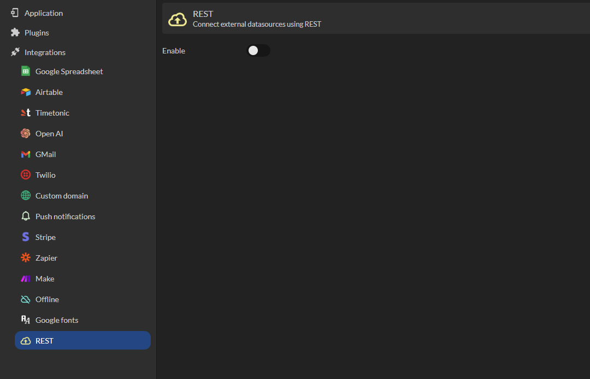
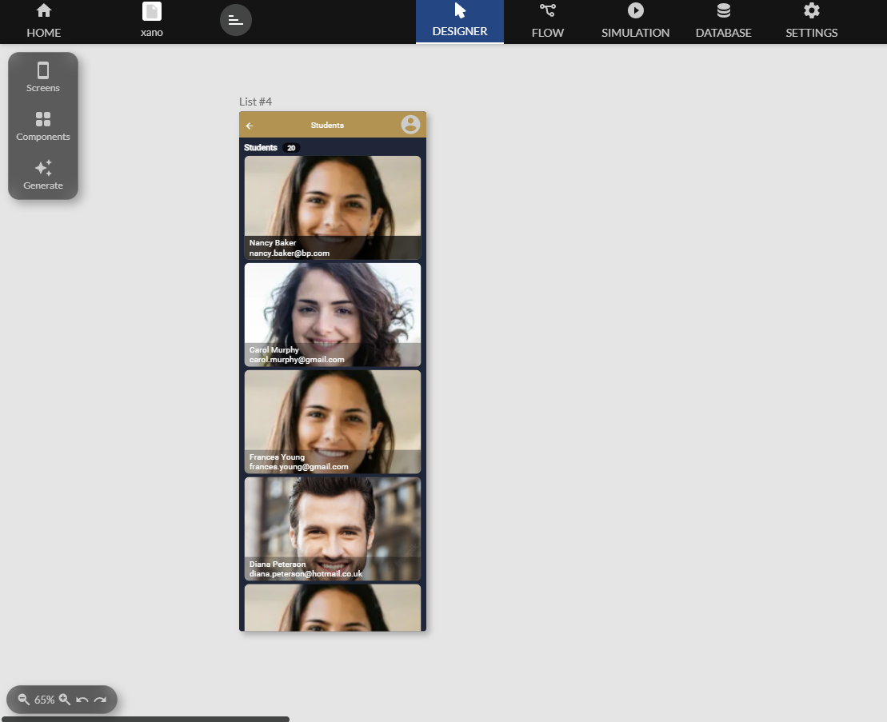

Xano
Cette documentation vous guide a travers les etapes necessaires pour integrer Xano.
Disponible depuis le plan Enterprise
Vous apprendrez a configurer Xano et a utiliser ses tables pour dynamiser vos applications.
Xano est une plateforme backend qui vous permet de creer, gerer et exploiter une base de donnees avec des APIs puissantes. Lorsqu'il est associe a Zyllio, Xano offre une solution robuste pour creer des applications performantes et complexes.
Configurer Xano
Configuration des tables
Dans la section Database, creez vos tables en fonction des besoins de votre application. Par exemple une table Students.

Configuration des APIs
Accedez a la section Settings de votre espace de travail, puis Manage.

Ensuite, creez une variable appelee API_KEY comme suit.

Vous pouvez definir la valeur de la cle comme vous le souhaitez. Il est souvent recommande d'utiliser une cle sous forme de chaine alphanumerique complexe pour plus de securite. Par exemple : a1b2c3d4-e5f6-7890-gh12-ijklmnop3456
Configurez des endpoints
Pour acceder aux donnees Xano depuis Zyllio, il est necessaire de creer 4 endpoints dans Xano.
Si votre application n'effectue aucune operation de modification, vous pouvez definir uniquement le endpoint de type GET.
Voici les etapes applicables aux 4 endpoints.

Ajouter un endpoint.

Selectionner CRUD database operations.

Selectionner la table.

Selectionner l'un des types de endpoints puis cliquer sur Save.

Securiser vos endpoints
Ouvrez le detail du endpoint a securiser, et cliquez sur le bouton Add function.

Cliquer sur Add function.

Selectionner Utility Functions.

Selectionner Precondition.

Cliquer sur Add Condition et saisir les parametres ci-dessus.
Pensez a publier votre endpoint et copier son URL pour les etapes suivantes.

Utilisation des tables Xano dans Zyllio
Une fois votre application creee, selectionnez Settings puis REST.

Cliquez sur Enable pour activer les echanges REST avec d'autres solutions telles que Xano. Ajouter une configuration appelee Xano par exemple.

Preciser l'URL du endpoint precedemment copiee dans l'interface Xano et la cle d'API definie dans Xano. Exemple.

Importer la table Xano
Depuis l'onglet Database, cliquez sur import puis REST.

Puis selectionnez le endpoint Studients et cliquez sur Import.

Vous obtenez une table dont toutes les colonnes correspondent a celle de Xano.

Afficher la table Xano
Vous pouvez afficher et modifier le contenu de la table Xano au meme titre que toute table definie dans votre application. Utilisons un ecran List pour afficher la table Studients.

Puis selectionnez la table Studients.

Vous obtenez :
